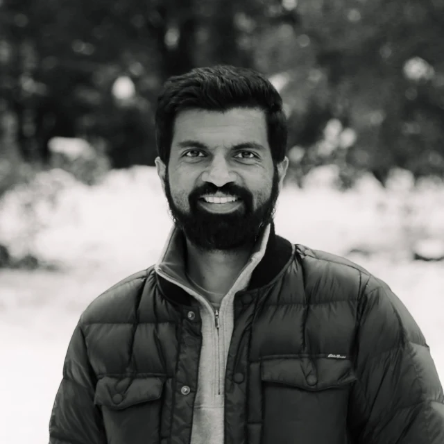
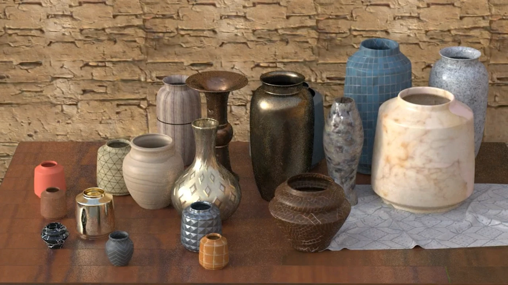
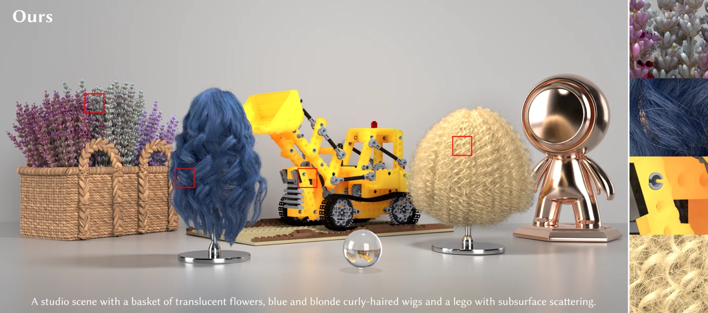

Photoshop
Rotate Object
Rotate an object in a photograph to change its angle and perspective. My work on the feature included the custom Gaussian splatting renderer powering its interactive 3D preview.
Computer graphics Generative AI
Research and production work in neural rendering, 3D representations, and generative models.
At Canva Research, I’m a Staff Research Engineer working on generative video systems and neural 3D.

Before Canva, I spent seven years at Adobe Research, working on neural rendering methods and production rendering systems. Earlier, I worked on shading systems for MoonRay at DreamWorks, with film credits on Trolls, The Boss Baby, and Trolls Holiday.
I earned an M.S. in Computer Science from UC San Diego (2015), focused on computer graphics and advised by Ravi Ramamoorthi.
Rendering systems shipped in Adobe’s creative tools.
Photoshop
Rotate an object in a photograph to change its angle and perspective. My work on the feature included the custom Gaussian splatting renderer powering its interactive 3D preview.
Illustrator
Ray-traced lighting and materials for vector artwork. I contributed to the renderer and co-developed the neural denoiser introduced with Illustrator’s redesigned 3D tools.
Dimension
GPU ray tracing for Dimension, built on OptiX and RTX. I led the four-person team that took the renderer from a research prototype into production.
Substance 3D
I helped bring Vulkan ray tracing and neural denoisers I co-developed to Substance 3D Stager and the then-beta Substance 3D Viewer, supporting interactive previews and faster final renders.

A diffusion model that generates renderable neural materials from images. I co-developed the method, built the synthetic-data pipeline, and trained the decoder and diffusion model.

Compact neural assets that preserve complex appearance as viewpoint and lighting change. I developed the representation and integrated it into a production path tracer.
SIGGRAPH 2025 · * Equal contribution
ACM Transactions on Graphics, 2024 · Presented at SIGGRAPH 2025
SIGGRAPH Asia 2024
SIGGRAPH 2022
ACM Transactions on Graphics · SIGGRAPH 2021
ACM Transactions on Graphics · SIGGRAPH 2021
I’ve mentored interns in rendering, neural materials, and 3D reconstruction, alongside researchers and engineers at Canva.
Neham Jain, Elmer Vasquez, Ruben Wiersma, Joey Litalien, Nithin Raghavan, Bailey Miller, Vaibhav Vavilala, Alexandr Kuznetsov, Mustafa Işık, Yaoyi Bai, and Owen Jow.
Regular reviewing for SIGGRAPH, SIGGRAPH Asia, and Eurographics; program committee service includes High-Performance Graphics, the Eurographics Symposium on Rendering, and SIGGRAPH Asia Technical Communications and Posters.
Email is the best way to reach me.